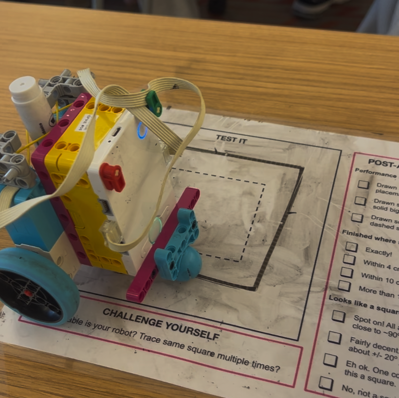

The assignment was to build and program a robot to draw a square on a placemat or another sheet of paper, fitting between the outer and inner squares printed on the placemat. After practicing at home, we had one in-class attempt, which was assessed using the rubric on the back of the placemat. The hardest part was accounting for error in the robot: repeating the same instructions could produce noticeably different results. To address this, I tried to make each turn independent of the previous one. Instead of turning 90 degrees relative to its current direction each time, the robot oriented itself 90 degrees from its starting position, then 180 degrees, and so on.